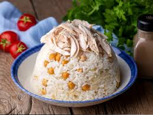
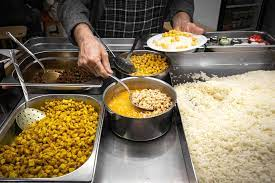
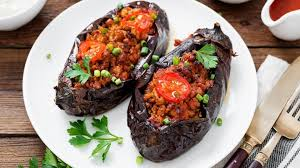
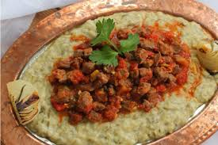

Turkish Cuisine Main Dishes
Turkish cuisine is a treasure trove of rich, flavorful dishes, each with a story to tell and a deep connection to history and tradition. The main dishes featured here are the heart of Turkish meals, beloved for their variety and depth of flavor. From the aromatic Karnıyarık with its tender eggplant stuffed with spiced meat, to the comforting Tavuklu Pilav that combines tender chicken with fragrant rice, Turkish main dishes offer a true taste of the country's culinary legacy.
Among them, Hünkar Beğendi (Sultan's Delight) stands out as a royal dish that combines tender lamb or beef with a creamy eggplant purée, a true masterpiece born out of a moment of improvisation in the Ottoman Empire. Each of these dishes has been cherished for generations, reflecting the diverse regional influences and the creativity of Turkish cooks through centuries.
Tavuklu Pilav (Chicken Pilaf)

Tavuklu Pilav is a traditional Turkish dish consisting of chicken and rice. The rice is typically cooked in a rich chicken broth, giving it a flavorful and aromatic taste. The dish is often served with pieces of tender, roasted or boiled chicken placed on top or mixed throughout the rice.
Chicken Pilaf is a beloved dish in Turkish cuisine, rooted in the rich culinary history of the Ottoman Empire. It's a versatile and economical dish, made by cooking rice with chicken and often served with a side of yogurt or pickles.In Turkish street food culture, chicken pilaf is a popular choice, especially in busy cities like Istanbul. Vendors serve it in large pots, offering quick, satisfying meals to people on the go. It's a staple for workers and locals seeking a hearty, affordable lunch.
Karnıyarık
Karnıyarık is a classic Turkish dish made with eggplants stuffed with a flavorful mixture of ground meat (usually beef or lamb), onions, garlic, tomatoes, and spices. The dish is then baked in a rich tomato sauce. It is often served with rice and yogurt.
While the exact origin of Karnıyarık is unclear, it has been a staple in Turkish cuisine since the Ottoman Empire, particularly in regions where eggplants were abundant. It reflects the fusion of various culinary traditions and remains a popular dish in Turkish households today.
Sultan’s delight (Hünkar beğendi)
It is a rich and flavorful dish consisting of a savory stew made from tender lamb or beef, served over a creamy and velvety eggplant purée.
Legend has it this dish came out of a hunting trip, where Sultan Murad IV suddenly became hungry and demanded food. His men found the nearest hut, where the cook was more than willing to oblige in cooking up a meal for the sultan.
There wasn’t much left in the kitchen, however. The cook assembled whatever scraps he had. A few aubergines, some meat. He then served the dish to the sultan. He must have done something right. At the end of the meal, the sultan called the cook forward, asking for the name of the dis
The cook responsed honestly. The dish didn’t have a name. It had been prepared not according to any recipe, but with what was available in the kitchen at this late hour.
—Then dish shall be known as “hünkar beğendi”, the sultan responded. “The Sultan liked it”.
What’s certain, however, is that hünkar beğendi is one of the few inventions of the Ottoman palace kitchens that has survived to modern day. It’s not the most widely served food in Turkish cuisine, but most Turks know it. And, needless to say, foreigners love it.